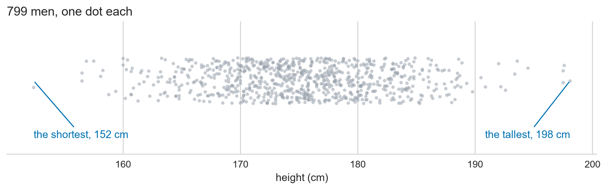
A Statistics Refresher
Read before Day 1, or in an expansion hour
2026-09-06
The course assumes five ideas. This deck builds them
Distributionshape, centre, width Quantilea cut in a sorted list i.i.d.two claims, two failures Testten checks, one number p-valueand its misreadings
This deck is read alone, and it assumes nothing about forecasting. Every picture on it is a measured human height, because a height needs no explaining.
A. Randomness has a shape
The random variable, the distribution, and the two numbers that summarize it
Before it is measured, a value is a random variable
Capital \(Y\) marks a value not yet known; lowercase \(y\) is what it turns out to be.
| Symbol | Meaning |
|---|---|
| \(Y\) | the height of the next person you measure: still random |
| \(y\) | the same height, once measured: a number |
A random variable is the whole set of values \(Y\) could take, before it is seen. Statistics is the study of that set.
Every picture here is drawn on the same 799 heights
The 799 men of a national health survey, each one measured standing against a board rather than asked. Before it is anything else it is a pile of 799 numbers, and every idea here is a question asked of them.
NHANES I Epidemiologic Follow-up Study · where these numbers come from
A distribution is the shape of the whole set of values
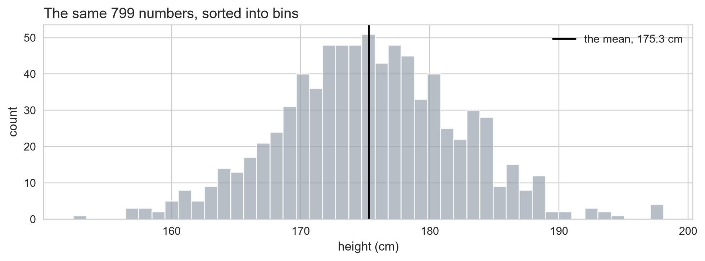
A distribution is the full set of plausible values and how often each occurs. Its picture is a histogram; the mean is one number inside it.
The mean is the centre, the SD is the width
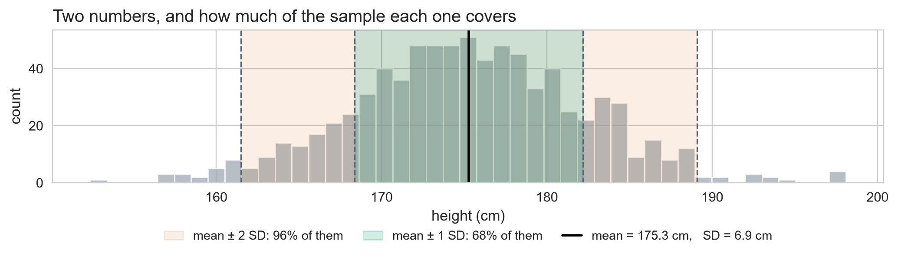
\[\bar{y} = \frac{1}{n}\sum_{i=1}^{n} y_i\]
\[s = \sqrt{\frac{1}{n-1}\sum_{i=1}^{n}(y_i - \bar{y})^2}\]
\(\bar{y}\) is 175.3 cm, the centre of the pile; \(s\) is 6.9 cm, the typical distance from it. \(s^2\) is the variance: that width squared, and the form that adds up on Day 1.
The bell curve is those two numbers and nothing else
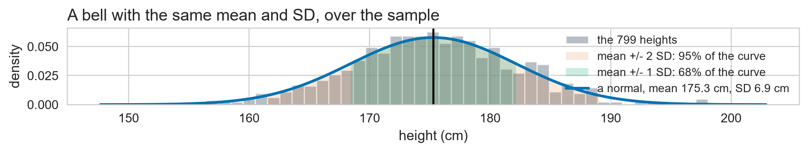
\[Y \sim N(\mu,\ \sigma^2)\]
Read \(\sim\) as is distributed as: \(\mu\) the centre, \(\sigma\) the width.
- A bell puts 68% of its values inside one SD, and 95% inside two
- These men put 68% and 96% there: close, and measured
Two numbers, one whole shape. Those 68% and 95% are shares of it, and a share of a shape has a name of its own.
A probability is a share of the whole pile
\(P(\text{something})\) is the share of the pile where that something is true, a number between 0 and 1.
| Notation | In words | Here |
|---|---|---|
| \(P(Y \le 180)\) | the next man measures 180 cm or less | 0.76 |
| \(P(Y > 180)\) | he measures more | 0.24 |
| \(P(\lvert Y - \bar{y} \rvert \le s)\) | he lands within one SD of the centre | 0.68 |
Capital \(Y\) is doing the work it was introduced for: a probability is a question about the value before it is measured. What people usually quote about a height is the other direction, a cut.
B. Cutting a distribution
The median, the quantile, the percentile, and what an 80% range is
The median is the cut that leaves half on each side
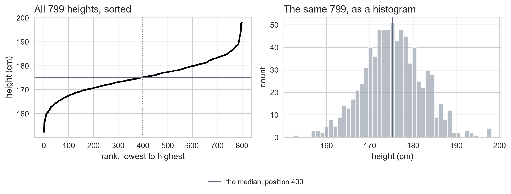
The median is a position in a sorted list, not a formula. Sort the 799 heights; the median is number 400, at 175 cm, with half the people below and half above.
A quantile is the same cut, with a knob
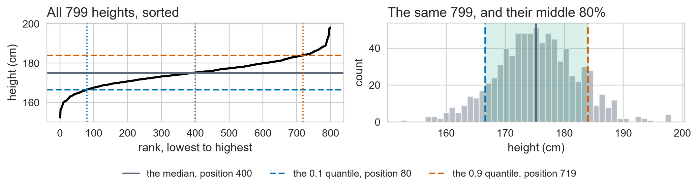
- The \(0.5\) quantile is the median: position 400 of 799
- The \(0.9\) quantile is position 719, the height 184 cm
- The \(0.1\) quantile is position 80, the height 167 cm
One rule, one number. A quantile is a position in a sorted list, and the number on the front is the knob.
An 80% range is a pair of cuts
An 80% range leaves 10% of the people in each tail, so its two ends are the \(0.1\) and \(0.9\) quantiles: 167 cm and 184 cm here.
A 95% range leaves 2.5% in each tail, so its ends are the \(0.025\) and \(0.975\) quantiles, 161 cm and 188 cm. Same rule, different knob.
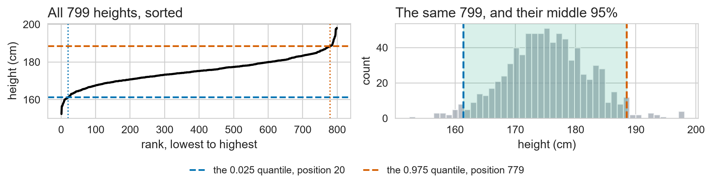
Every interval the course later puts around a forecast is a pair of cuts like these. Nothing else changes between an 80% one and a 95% one.
A percentile is the same cut, read as a share
The 90th percentile is the height below which 90% of the people fall. The \(0.9\) quantile and the 90th percentile are the same number, 184 cm.
A quantile is a position in one sorted list. It says nothing about where the next value comes from.
A distribution tells you the shape of one sample. It does not tell you whether the next value is drawn from that same shape, or whether the sample was collected in a way that lets you ask.
C. i.i.d.
Independent, then identically distributed, then each one breaking on this survey
i.i.d. is two claims, and they fail differently
Independent
Each value tells you nothing about the next one.
Identically distributed
Every value in the sample comes from the same distribution.
They are separate claims, and each breaks its own way. One careless survey breaks the first. A different careless survey breaks the second.
Independent means one says nothing about the other
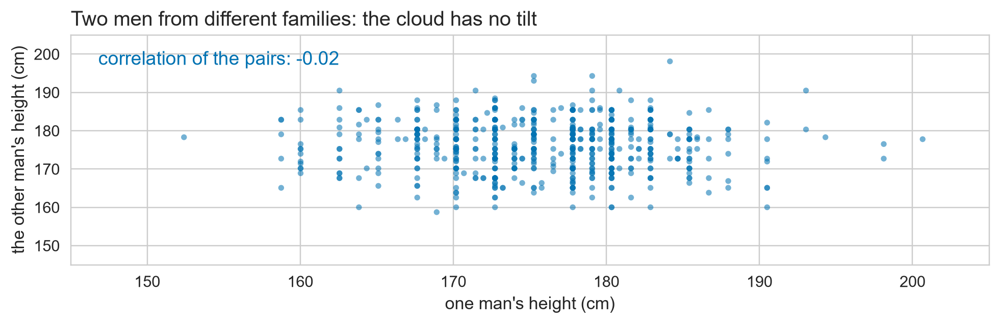
Take 605 pairs of men from different families and plot each pair. If the two are independent the cloud has no tilt, and the correlation sits at -0.02 on a scale running from \(-1\) to \(+1\).
Now pair each man with his own brother instead. What happens to the cloud?
Pair each man with his own brother instead

- The same 605 pairs, now correlating at +0.39
- Read one brother’s height and you can guess the other’s
Independence fails when one value carries information about another. Same men, same histogram, different pairing.
Galton (1886), 934 children in 205 families · where these numbers come from
Identically distributed means one shape throughout
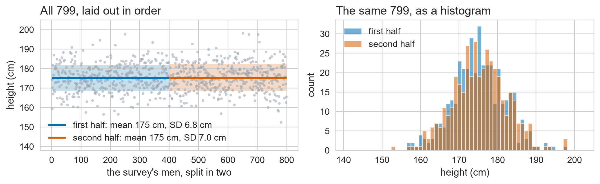
Split the men in two and look at each half. If both sit at the same level with the same spread, one distribution stands for all of them, and the histogram has one hump.
Now split the survey by something that is not arbitrary.
One survey, two populations, and one bell for both
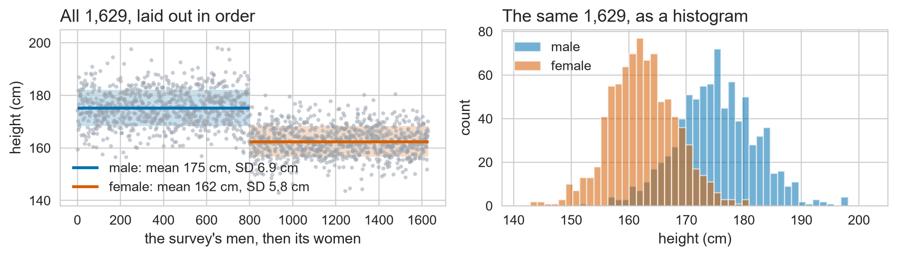
The same survey also measured 830 women. Two overlapping populations, and a pooled SD of 9.1 cm against 6.9 and 5.8 inside the groups.
Identical distribution fails when one sample holds two populations. Its pooled 80% range, 157 to 181 cm, is right for nobody.
D. Testing a claim
H0 and H1, the test statistic, the null distribution, alpha, the decision
A claim worth checking, before we check it
Suppose these men come from a bell centred on 175 cm with a standard deviation of 7 cm.
That 175 is a parameter, a fact about every man alive that nobody will ever measure. The 175.3 cm these 799 came out at is a statistic.
Eyeballing one against the other cannot say whether the gap between them is real or luck. The rest of this segment is how you ask properly.
Greek is what you cannot measure, Latin is what you counted
| parameter, in Greek | statistic, in Latin | |
|---|---|---|
| centre | \(\mu\) = 175 cm, claimed | \(\bar{y}\) = 175.3 cm, measured |
| width | \(\sigma\) = 7 cm, claimed | \(s\) = 6.9 cm, measured |
A hat marks a parameter that was estimated from data rather than known: \(\hat{\sigma}\) is a guess at \(\sigma\), so it is a statistic like any other. Day 1 puts a hat on almost everything.
The claim is a prediction you can count
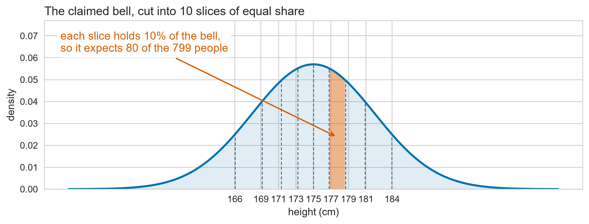
Cut the claimed bell into 10 slices that each hold the same share. The cuts are quantiles, from the last segment, and the claim now predicts a count: about 80 men per slice.
Every slice is a separate check the claim has to pass
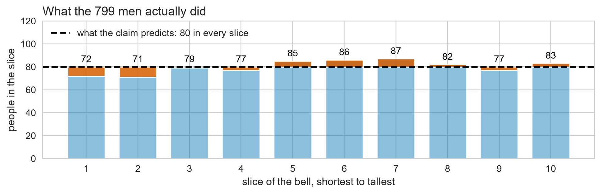
If the claim is right, each slice should hold about 80 of the 799 men. The orange blocks are the gaps, and no single one of them looks alarming.
Ten separate checks, and with ten chances one gap looks large by luck alone reasonably often. Judging them one at a time is how you talk yourself into anything.
Name the claim, and then its opposite
\(H_0\): the null
The men come from the claimed bell, so every slice holds about 80 of them.
\(H_1\): the alternative
They do not. At least one slice is off by more than luck explains.
The null is the boring version of the world, because that is the one a single number can be measured against.
The ten gaps pool into one number
one slice’s gap
\[O_i - E_i\]
short and long both count
\[(O_i - E_i)^2\]
scaled by what was expected
\[\frac{(O_i - E_i)^2}{E_i}\]
\[Q = \sum_{i=1}^{k}\frac{(O_i - E_i)^2}{E_i}\]
\(Q\) is the orange blocks from the last slide, squared, scaled and added over all 10 slices. Ten checks in, one number out. If the claim is true, what should it come out at?
Simulate the claim being true and Q still wobbles

Invent 20,000 surveys of 799 men drawn from the claimed bell, so the claim is true by construction. Every one of them still lands its slices a little off, so every one of them still has a \(Q\).
\(Q\) is never zero, even when nothing is wrong. It averages 9.0. What the men’s \(Q\) has to be compared against is this whole pile, not zero.
That wobble is the chi-squared distribution
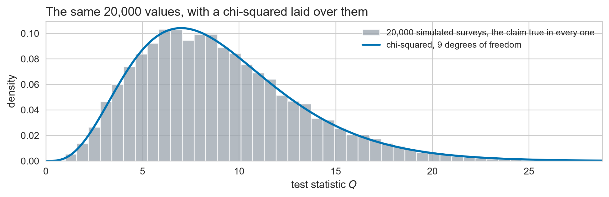
- Its one setting is the degrees of freedom, 9 here rather than 10
- Nine slice counts and the total fix the tenth, so only 9 can move
This is the null distribution of \(Q\), and it is a sampling distribution: the spread a number picks up purely from being computed on a sample. Knowing it is what turns one number into a decision.
The critical value is where the top 5% begins
Alpha is the false-alarm rate you accept: \(\alpha = 0.05\) means accepting a 5% chance of rejecting the claim when it is true. It is fixed before the data is looked at.
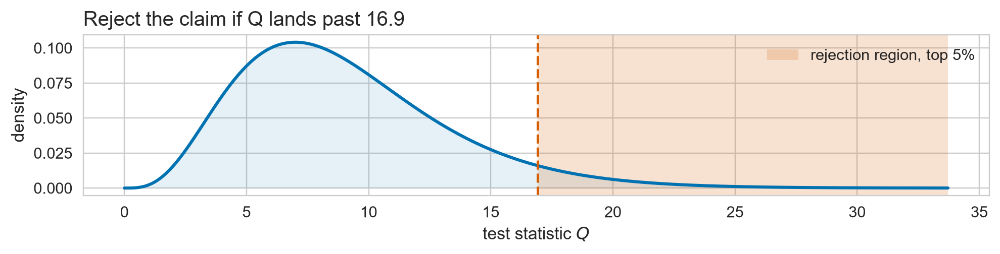
Of those invented surveys, 5.1% landed past 16.9: alpha, counted.
The critical value is the 95th percentile of the null: a quantile, cut from segment B. Reject \(H_0\) if \(Q\) lands past 16.9.
The men’s Q lands inside the wobble
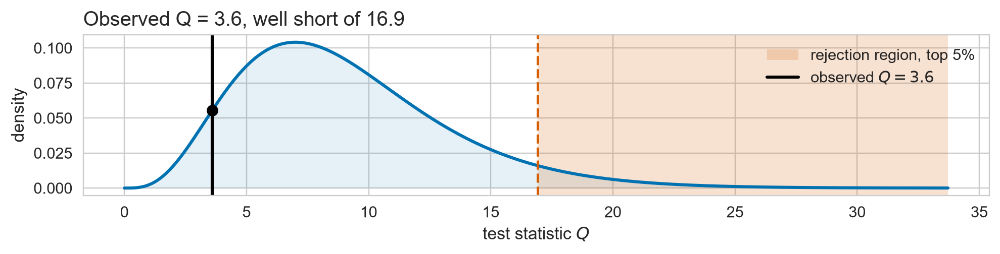
\(Q\) is 3.6 against a critical value of 16.9. These men are indistinguishable from the claim, which is not the same as showing the claim is true.
Add the women back and Q lands far out in the tail
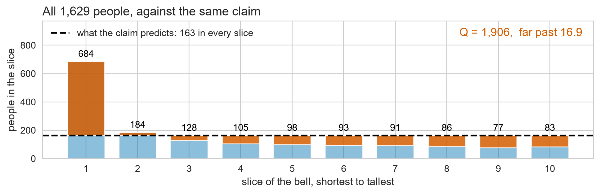
- The shortest slice expected 163 people and got 684
- \(Q\) is 1,906, so the claim is rejected
The same test, the same claim, one sample holding two populations. One number now says what segment C needed two pictures to show.
E. The p-value
What it is, how to read it off the null, and the misreadings
The p-value is how often this extreme happens under H0
\[p = P\big(Q \ge Q_{\text{obs}}\big)\]
\[p = P\big(Q \ge Q_{\text{obs}} \;\big|\; H_0\big)\]
How often a statistic at least this extreme turns up, when the claim is true.
Read the bar as given: \(P(A \mid B)\) is how often \(A\) happens among the cases where \(B\) holds, which is not how often \(A\) happens.
\(p\) conditions on \(H_0\). It measures how surprising the data would be if the claim were true, and nothing else.
Read it off the null distribution, at the observed value
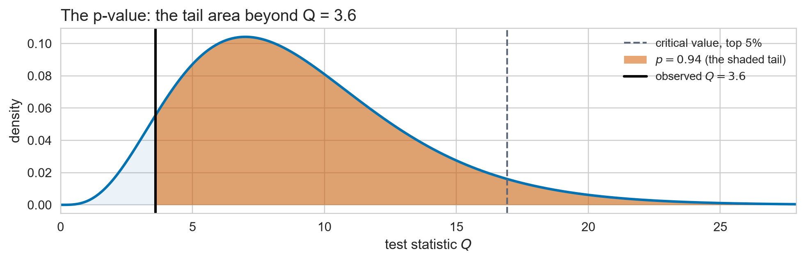
Or count it instead: 94% of the 20,000 invented surveys produced a \(Q\) at least this big. The area and the count are the same number.
The \(p\)-value is the tail area beyond the observed \(Q\), under the null. Here it is 0.94, so a \(Q\) this big or bigger happens 94% of the time when the claim is true.
p is not the probability that H0 is true
What \(p\) measures
\[P(\text{data this extreme} \mid H_0)\]
A share of the 20,000 invented surveys, every one of which obeys the claim.
What people hear
\[P(H_0 \mid \text{data})\]
A verdict on the claim itself. Different question, and answering it needs a prior.
Nor is it the probability that the result happened by chance: that would be \(P(\text{data})\), with no bar at all.
Both misreadings drop the conditioning bar. \(p\) is a tail area under an assumed null, not a verdict on the null and not a probability of the data.
A small p means detectable, not large
One wrong claim, 1.8 cm below what these men measure, tested on all 799 of them and then on the first 50. Same error both times: how far apart can the two \(p\)-values be?
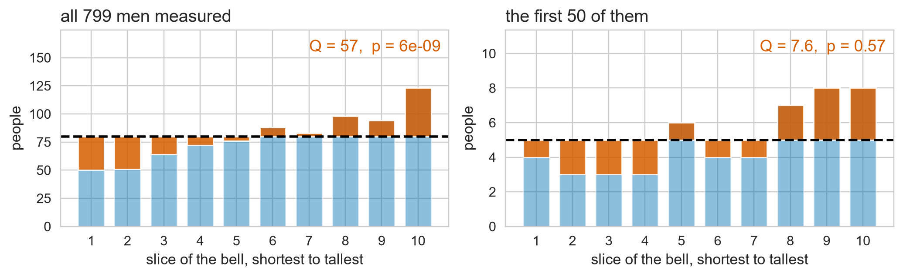
6e-09 against 0.57. \(p\) answers a question about sample size as much as about the size of the difference, so it ranks nothing. Never sort competing claims by \(p\).
A tiny p means unfinished, not very wrong
The pooled survey’s \(Q\) is 1,906, so far into the tail that its \(p\) underflows to zero. That does not make the claim worthless: it means one bell cannot describe two populations, and the test can tell.
Every method in this course leaves something behind, and a test is how you find out whether it is more than luck. A tiny \(p\) means unfinished.
F. Where each idea lands
The pointer table back into decks 2, 3 and 4
Five ideas, and the course slides that need them
| Concept | The course slide that needs it |
|---|---|
| Distribution, mean, SD | \(e_t \sim N(0, \sigma^2)\), and so the Gaussian interval (deck 3) |
| Quantile, percentile | An 80% interval is the \(0.1\) and \(0.9\) quantiles; CRPS integrates a ladder of them (decks 3 and 4) |
| i.i.d. | Pooling 1982 errors with 2018 errors drops bootstrap coverage to 61% (deck 4) |
| Hypothesis testing, and the sampling distribution under it | 24 lag checks by eye become one number (deck 3); the same simulated pile is the \(\pm 1.96/\sqrt{T}\) band on an ACF (deck 2) and the standard error of a coverage rate (deck 4) |
| The p-value | \(p \approx 10^{-240}\), so the floor is beatable, so Day 3 exists (deck 3) |
On Day 1 the sample stops being measured heights and becomes the errors a forecast makes. The five checks under Before Day 1 in the Day 1 notebook rehearse these, one per segment.
Where these heights come from
| file | what it is | what the deck does with it |
|---|---|---|
nhefs_heights.csv |
NHANES I Epidemiologic Follow-up Study: 1,629 adults, height measured to a fraction of a centimetre rather than asked | its 799 men are every picture here; its two populations are segment C’s second failure |
galton_children.csv |
Galton (1886): 934 children in 205 families, inches converted to centimetres | segment C’s brother pairs. The one file that records who is related to whom |
Public domain, and committed under coursekit/data/ so the course runs offline. Refresh from Rdatasets: causaldata/nhefs.csv · HistData/GaltonFamilies.csv